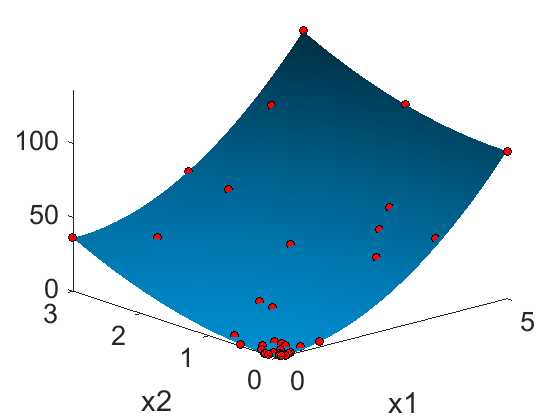

Contents
Tutorial: How to use KriKit for Optimization
Ignore the next three line:
clc
clear
close all
Test Function
This function has a clear minimum at [0,0]
y1 = @(x)4*x(:,1).^2 + 4*x(:,2).^2;
% For a better visualization, a fine grid is generated
nDataFull = 100;
XFull = createNDGRID([0,0],[5,3],nDataFull);
Y1Full = y1(XFull);
Initial Data Set
% Create First Data Set. We start with this data set and enter the % iterative cycle later. The iniital experimnetal design is not part of % KriKit and has be planed manually. Classic design of experiment can be % helpful, i.e. fractional and full factorial design XTest = [5,3;... 2.5,3;... 5,0;... 5,1.5;... 2.5,1.5;... 0,3]; Y1Test = y1(XTest); % Visual representation of the intitial experiments. 3D surface is % generated using the brute force generated data see from above % (XFull,YFull). Red dots indicate initial experiments. No experiment near % the optimum. figure hold surf(unique(XFull(:,1)),unique(XFull(:,2)),reshape(Y1Full,nDataFull,nDataFull)') shading(gca,'interp') campos([26.2542 28.9225 259.8676]) xlabel('x1') ylabel('x2') set(gca,'FontSize',20) plot3(XTest(:,1),XTest(:,2),Y1Test,'ko','MarkerFaceColor','r'); axis tight campos([-23.7404 -16.2737 546.0800])
Current plot held
Iterative optimization
nIteration = 3; for iIteration = 1:nIteration % Generate the Kriging model using the current data set krigingObj = BayesianOptimizationClass; krigingObj.addKrigingObject(1,'Y1') krigingObj.KrigingObjects{1}.setInputData(XTest) krigingObj.KrigingObjects{1}.setOutputData(Y1Test) krigingObj.KrigingObjects{1}.setCovariogramModelChoice(6) krigingObj.KrigingObjects{1}.setUseMatlabRegressionGP(true) krigingObj.KrigingObjects{1}.generateRegressionGPModel % Design 10 new experiments based on Markov Chain and Expected % Improvement krigingObj.setnNewSamples(10) % Calculate a Markov-Chain with 1e4 links krigingObj.setnMCMCLinks(1e4) % Ignore first 1e3 links( algorithm might need some time until it converges) krigingObj.setnCutLinks(1e3) % Actual Design Process newSamplePoint = krigingObj.calcNewSamplesViaMCMC(1,'DRAM'); % Update Data set XTest = [XTest;newSamplePoint]; Y1Test = y1(XTest); end
Final Plot
A high number of experiment are located near the optimum. However, the optimization is robust, as it also considered location that are not optimal but have the potential to be, as the model is here uncertain.
figure hold surf(unique(XFull(:,1)),unique(XFull(:,2)),reshape(Y1Full,nDataFull,nDataFull)') shading(gca,'interp') campos([26.2542 28.9225 259.8676]) xlabel('x1') ylabel('x2') set(gca,'FontSize',20) plot3(XTest(:,1),XTest(:,2),Y1Test,'ko','MarkerFaceColor','r'); axis tight campos([-23.7404 -16.2737 546.0800])
Current plot held